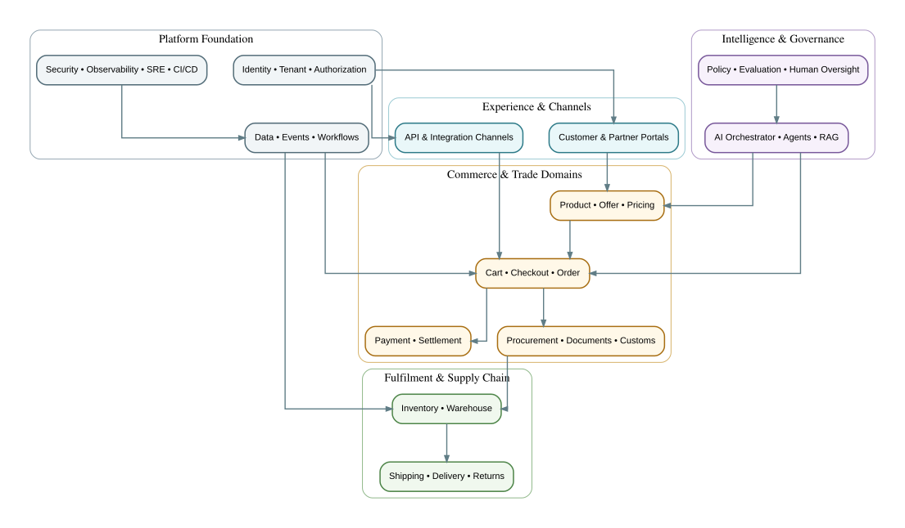

Architecture Overview Expand

Normative high-level architecture view. Domain Map Expand
Normative high-level architecture view. Global Lifecycle Expand
Normative high-level architecture view. Event Reliability Expand
Normative high-level architecture view. Implementation Roadmap Expand
Normative high-level architecture view. State lifecycle pattern Expand
PROPOSED · PROPOSED VALIDATION_PENDING · VALIDATION_PENDING APPROVAL_PENDING Decision and execution workflow Expand
A Validate identity version and authority B Collect required evidence · B C Policy and evidence gates pass? · C No D Open exception or request correction State lifecycle pattern Expand
PREPARATION · PREPARATION DOCUMENT_PENDING · DOCUMENT_PENDING SUBMITTED Decision and execution workflow Expand
A Validate identity version and authority B Collect required evidence · B C Evidence and policy gates pass? · C No D Open exception or request correction State lifecycle pattern Expand
DRAFT · DRAFT CONTENT_PENDING · CONTENT_PENDING ELIGIBILITY_PENDING State lifecycle pattern Expand
CART_ACTIVE · CART_ACTIVE CHECKOUT_STARTED · CHECKOUT_STARTED VALIDATION_PENDING State lifecycle pattern Expand
PLANNED · PLANNED READY · READY IN_PROGRESS State lifecycle pattern Expand
PENDING_ALLOCATION · PENDING_ALLOCATION ALLOCATED · ALLOCATED PICKING State lifecycle pattern Expand
PENDING_RECEIPT · PENDING_RECEIPT QUARANTINED · QUARANTINED AVAILABLE State lifecycle pattern Expand
NOT_STARTED · NOT_STARTED STARTED · STARTED IN_PROGRESS State lifecycle pattern Expand
BOOKED · BOOKED PICKED_UP · PICKED_UP DEPARTED State lifecycle pattern Expand
OBLIGATION_OPEN · OBLIGATION_OPEN CALCULATION_PENDING · CALCULATION_PENDING APPROVAL_PENDING State lifecycle pattern Expand
PREPARATION · PREPARATION VALIDATION_PENDING · VALIDATION_PENDING READY_TO_SUBMIT State lifecycle pattern Expand
PROPOSED · PROPOSED FEASIBILITY_CHECK · FEASIBILITY_CHECK MATERIAL_CHECK State lifecycle pattern Expand
REQUESTED · REQUESTED RISK_ASSESSMENT · RISK_ASSESSMENT APPROVAL_PENDING State lifecycle pattern Expand
REQUESTED · REQUESTED ELIGIBILITY_REVIEW · ELIGIBILITY_REVIEW AUTHORIZED State lifecycle pattern Expand
REQUIREMENT_READY · REQUIREMENT_READY OPTIONS_REQUESTED · OPTIONS_REQUESTED OPTIONS_RECEIVED State lifecycle pattern Expand
DRAFT · DRAFT VALIDATION_PENDING · VALIDATION_PENDING APPROVAL_PENDING State lifecycle pattern Expand
SCHEDULED · SCHEDULED ARRIVED · ARRIVED IDENTITY_CHECK State lifecycle pattern Expand
APPOINTMENT_PENDING · APPOINTMENT_PENDING SCHEDULED · SCHEDULED ARRIVED State lifecycle pattern Expand
DRAFT · DRAFT VALIDATION_PENDING · VALIDATION_PENDING APPROVAL_PENDING State lifecycle pattern Expand
DRAFT · DRAFT APPROVAL_PENDING · APPROVAL_PENDING APPROVED